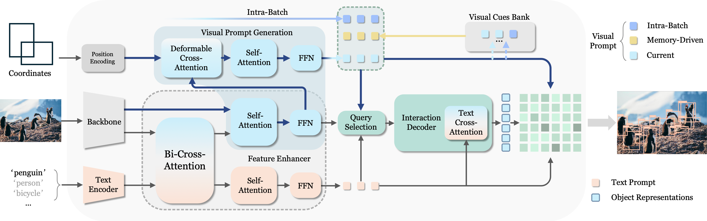
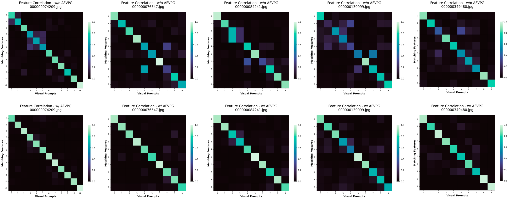
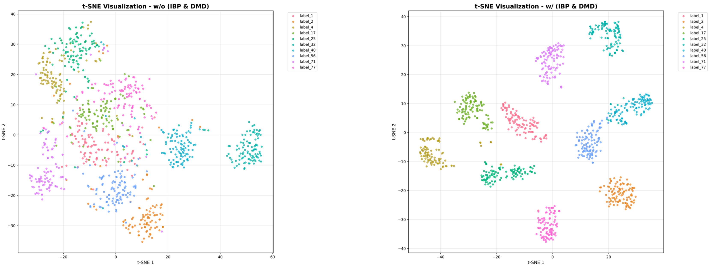
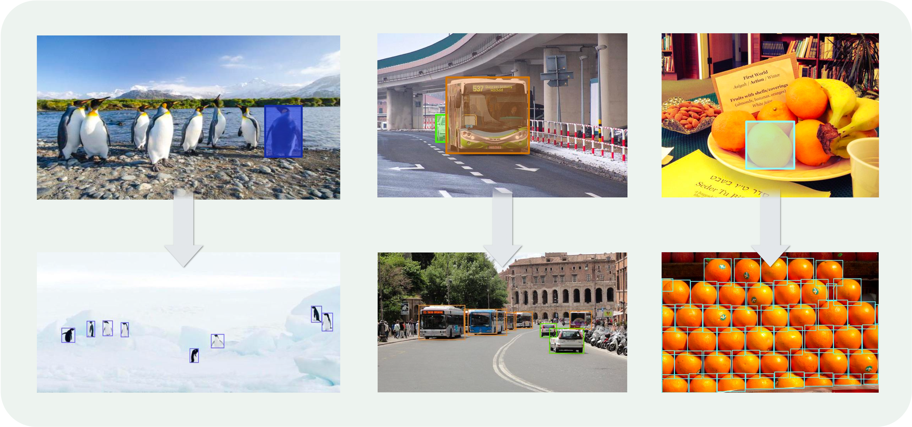

Abstract
Open-Set Object Detection (OSOD) enables recognition of novel categories beyond fixed classes but faces challenges in aligning text representations with complex visual concepts and the scarcity of image-text paired samples for rare categories. This results in suboptimal performance in specialized domains or with complex objects. Recent visual-prompted methods partially address these issues but often involve complex multi-modal designs and multi-stage optimizations, extending the development cycle. Additionally, effective training strategies for data-driven OSOD models remain largely unexplored. To address these challenges, we propose PET-DINO, a universal object detector supporting both text and visual prompts. Our Alignment-Friendly Visual Prompt Generation (AFVPG) module builds upon an advanced text-prompted detector, addressing the limitations of text representation guidance and reducing the development cycle. We introduce two prompt-enriched training strategies: Intra-Batch Parallel Prompting (IBP) at the iteration level and Dynamic Memory-Driven Prompting (DMD) at the overall training level. These strategies enable simultaneous modeling of multiple prompt routes, parallel alignment with diverse real-world usage scenarios. Comprehensive experiments demonstrate that PET-DINO exhibits competitive zero-shot object detection capabilities across various prompt-based detection protocols. These strengths can be attributable to inheritance-based philosophy and prompt-enriched training strategies, which play a critical role in building effective generic object detector.
Method



Visualization



BibTeX
@article{fu2026pet,
title={PET-DINO: Unifying Visual Cues into Grounding DINO with Prompt-Enriched Training},
author={Fu, Weifu and Li, Jinyang and Gao, Bin-Bin and Li, Jialin and Lin, Yuhuan and Deng, Hanqiu and Tao, Wenbing and Liu, Yong and Wang, Chengjie},
journal={arXiv preprint arXiv:2604.00503},
year={2026}
}